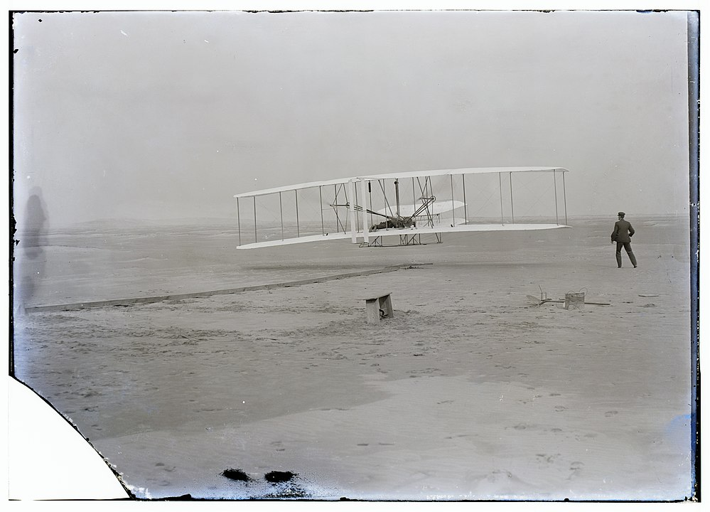

Vamos a hablar de uno de los mejores eventos que puede existir en Colombia, que es la feria Aeronáutica que se realiza todos los años en el aeropuerto en Rio Negro en la ciudad de Medellín, Obviamente por otro lado te explicaremos como surgió toda la aviación desde sus principios y por último se podrá visualizar algunos clásicos y mas famosos aviones de la historia.
Un avión también denominado aeroplano, es un aerodino de ala fija, o aeronave con mayor densidad que el aire, dotado de alas y un espacio de carga, y capaz de volar impulsado por uno o más motores. Los aeroplanos incluyen a los monoplanos, los biplanos y los triplanos. Los aeroplanos sin motor se denominan planeadores o veleros, y han sido usados desde los inicios de la aviación, para la llamada aviación deportiva, e incluso para el transporte de tropas durante la Segunda Guerra Mundial.
Pueden clasificarse por su uso como aviones civiles: que pueden ser de carga, transporte de pasajeros, entrenamiento, sanitarios, contra incendios, privados, etc y aviones militares: carga, transporte de tropas, cazas, bombarderos, de reconocimiento o espías, de reabastecimiento en vuelo, etc. También pueden clasificarse en función de su planta motriz: aviones propulsados por motores a pistón, motores a reacción turborreactor, turborreactor de doble flujo, turbohélice, etc, o propulsores a cohetes.
El sueño de volar se remonta a la prehistoria. Muchas leyendas y mitos de la antigüedad cuentan historias de vuelos como el caso griego del vuelo de Ícaro. Leonardo da Vinci, entre otros inventores visionarios, diseñó un Avión, en el siglo xv. Con el primer vuelo realizado por el ser humano por François de Rozier y el marqués de Arlandes en 1783 en un aparato más ligero que el aire, un globo de papel construido por los hermanos Montgolfier, lleno de aire caliente, el mayor desafío pasó a ser la construcción de una máquina más pesada que el aire, capaz de alzar vuelo por sus propios medios.
Años de investigaciones por muchas personas ansiosas de conseguir esa valentía, generaron resultados débiles y lentos, pero continuados. El 28 de agosto de 1883, John Joseph Montgomery fue la primera persona en realizar un vuelo controlado con una máquina más pesada que el aire, un planeador. Otros investigadores que hicieron vuelos semejantes en aquella época fueron Otto Lilienthal, Percy Pilcher y Octave Chanute. El primer avión propiamente dicho fue creado por Clément Ader, quien el 9 de octubre de 1890 consigue despegar y volar 50 metros con su Éole. Posteriormente repite la hazaña con el Avión II que vuela 200 m en 1892 y el Avión III que en 1897 vuela una distancia de más de 300 m. El vuelo del Éole fue el primer vuelo autopropulsado de la historia de la humanidad, y es considerado como la fecha de inicio de la aviación en Europa.
